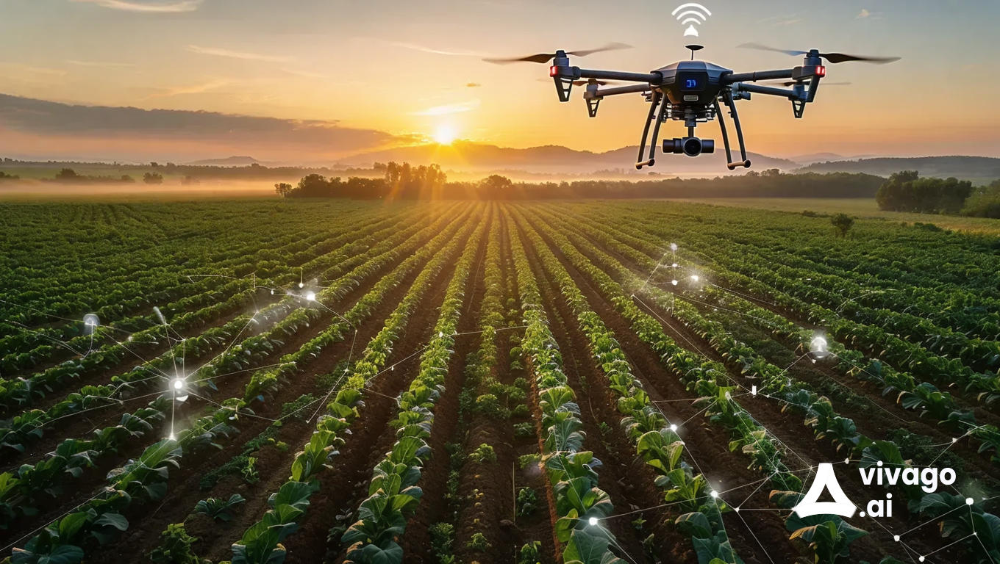

What is Crop Monitoring?

Crop monitoring refers to the systematic observation and analysis of crop health, growth conditions, and environmental factors affecting agricultural productivity. Utilizing technologies such as drones, satellite imagery, and IoT sensors, farmers can gain valuable insights into their crops’ conditions, enabling informed decision-making for better yields.
Importance of Crop Monitoring
Crop monitoring is vital for several reasons:
- Early Detection of Issues: Identifying pests, diseases, and nutrient deficiencies before they spread.
- Resource Management: Optimizing water and fertilizer usage, leading to cost savings and environmental sustainability.
- Yield Prediction: Providing data to forecast crop yields, aiding in market planning and resource allocation.
- Data-Driven Decisions: Empowering farmers with actionable insights to improve overall farm management.
Uses of Crop Monitoring
Crop monitoring can be applied in various ways, including:
- Disease Monitoring: Regular checks to identify and manage crop diseases.
- Soil Health Assessment: Analyzing soil conditions to ensure optimal growth.
- Irrigation Management: Adjusting irrigation practices based on real-time moisture data.
- Pest Management: Monitoring for pest outbreaks to implement timely control measures.
Benefits of Crop Monitoring
Implementing crop monitoring systems offers numerous advantages:
- Increased Productivity: Improved crop health leads to higher yields and quality.
- Cost Efficiency: Reduced waste of resources, such as water and fertilizers.
- Sustainable Practices: Promotes environmentally friendly farming practices through precise resource use.
- Enhanced Decision-Making: Access to timely data enables farmers to make informed choices about their operations.
Contact Us
If you would like to learn more about crop monitoring or have questions, please reach out to us:
Email: cropmonitoring@example.com
Phone: 123-456-7890
Our team is dedicated to helping you enhance your agricultural practices through effective monitoring solutions.